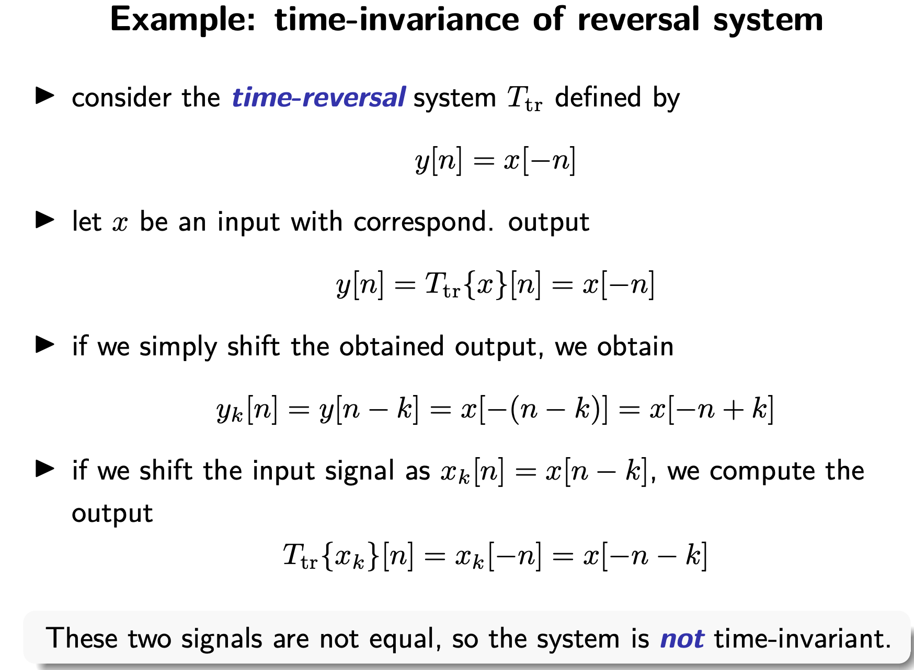

Last Edit: 3/26/26
DT System #
The DT system gets in a DT input and produces exactly one DT output
- $T{x}[n]$ is the value of the output signal at time $n\in \mathbb Z$
While CT systems is more align to physics, DT system tend to come from engineering processes, such as
- Discretisation of CT systems
- Digital filtering or signal processing
- Economic/ Financial models
Properties of DT systems: Linearity and Causality #
Linearity #
A DT system $T$ is linear if for any two input signals $x, \tilde{x}$ and any two constants $\alpha, \tilde{\alpha} \in \mathbb{C}$ it holds that $T{\alpha x + \tilde{\alpha}\tilde{x}} = \alpha T{x} + \tilde{\alpha} T{\tilde{x}}$
Causality #
A DT system $T$ is causal if for all $n \in \mathbb{Z}$, the output value $y[n]$ depends only on the present and previous input values ${ \dots, x[n-2], x[n-1], x[n] }$
Property of DT systems: Time-Invariance #
A DT system T is time-invariant if for any input signal $x$ with output signal $y = T{x}$, it holds that $y_k = T{xk}$ for all possible time shifts $k \in \mathbb{Z}$
Ex. Time-invariance of reversal system #

Properties of DT systems: memory and invertibility #
Memoryless #
A DT system T is memoryless if for all times $n \in \mathbb{Z}$, the output value $y[n]$ depends only on the input value $x[n]$
Invertible #
A DT system T is invertible if there exists another DT system $T_{inv}$ such that $T_{inv}{T{x}} = T{T_{inv}{x}} = x$ for all inputs $x$
Property of DT system Stability (linear systems) #
A signal is Bounded or having Finite Amplitude if $||x||\infty = \max{n \in \mathbb{Z}} |x[n]|$, i.e. the amplitude of the signal has a maximum over the whole period
Bounded-Input Bounded-Output Stable #
If there’s a constant $K\geq 0$ s.t. $||y||\infty \le K||x||\infty$ for all $y = T{x}$
Properties of DT systems: LTI #
The Impulse response of a LTI system #
Impulse response $h$ of a DT LTI system $T$ is the response $T{δ}$ to a unit impulse δ input applied at $n = 0$, i.e., $h = T{δ}$
- Get the Impulse Response by simply substitute the function into Impulse Function $\delta (t)$
Response of a DT LTI system #
Known the input $x$ can be expressed in DT as $x = \sum_{k=-\infty}^{\infty} x[k]\delta_k$, known its output is $y=T{x}$, thus we can sub in the input to get
$$ y = T{x} = T \left{ \sum_{k=-\infty}^{\infty} x[k]\delta_k \right} = \sum_{k=-\infty}^{\infty} x[k]T{\delta_k} $$
and as this is a Time-Invariant System, we can get
$$ y[n]=\sum_{k=-\infty}^{\infty} h[n - k]x[k] $$
Properties of DT convolution #

Ex. DT convolution and polynomial multiplication #


LTI System Properties and the Impulse Response #
Overall, to summarise, the output of DT LTI system is the convolution of impulse response with input signal $y = h * x$
$$ y[n] = \sum_{k=-\infty}^{\infty} h[n - k]x[k] $$
And the Impulse Response $h$ actually determines a lot of properties for System

Ex. Bank Account Model #


Finite impulse response (FIR) systems #
Finite Impulse Response is a DT LTI system of the form
$$ y[n] = \sum_{k=0}^{M} b_k x[n - k] = b_0 x[n] + b_1 x[n - 1] + \dots + b_M x[n - M] $$
- $x[n]$: Present output
- $x[n-k]$: Past outputs
This means that the current output value is a finite linear combination of past and present input values
Impulse response of FIR system #
The impulse response of an FIR system is calculated to be
$$ h[n] = \sum_{k=0}^{M} b_k \delta[n-k] = \begin{cases} b_n & \text{if } 0 \le n \le M \ 0 & \text{otherwise} \end{cases} $$
Conclusion: the number of nonzero terms for FIR system is limited, thus named Finite Impulse Response
Properties of LTI FIR system #
Thus we can conclude this system is
- Causal: As $h[n]=0$ for all $n<0$
- BIBO stable: since
$$ \sum_{k=-\infty}^{\infty} |h[n]| = \sum_{k=0}^{M} |b_k|<\infty $$
Difference Equations and DT systems #
In the following part, we are going to analysis the case of linear, inhomogeneous, constant-coefficient difference equations
We now called this long difference equation the LICC-DE, having the form
$$ a_0y[k] + a_1y[k-1] + \dots + a_ny[k-n] = b_0x[k] + \dots + b_mx[k-m] $$
- $x$: Input Signal
- $y$: Output Signal
- $n,m$: Nonnegative Int
- $a_i,b_j$: Real Constant Coefficient
- we assume $a_0=1$ for not losing generality
Now we define a operator $D^\ell y[k] = y[k - \ell]$, the power of $D$ is just the number of step $D$ going backwards, thus we can get two equation of left and right side
$$ Q(D) = 1 + a_1D + a_2D^2 + \dots + a_nD^n $$
$$ P(D) = b_0 + b_1D + b_2D^2 + \dots + b_mD^m $$
Now the LICC-DE then becomes
$$ Q(D)y[k] = P(D)x[k] $$
LICC-DEs define LTI DT systems #
As LICC-ODEs for CT systems, we only consider right-sided inputs and outputs

Ex. Discretised RC circuit #

DT LTI system with complex exponential inputs #
Setting the input to be $x[n] = e^{j\omega_0 n}$, then
$$ y[n] = \sum_{k=-\infty}^{\infty} h[k]e^{j\omega_0 (n-k)} = \left[ \sum_{k=-\infty}^{\infty} h[k]e^{-j\omega_0 k} \right] e^{j\omega_0 n} $$
We can see the output of this Complex Exponential is
- Also a complex Exponential
- Same Frequency
- Scaled by the DTFT of $h$
Here we define the DTFT as the frequency response of system, that $H(e^{j\omega}) = \sum_{n=-\infty}^{\infty} h[n]e^{-j\omega n}$
When the input is a Complex Exponential Signal $x[n] = e^{j\omega_0 n}$, the output will be
$$ y[n] = |H(e^{j\omega_0})| e^{j(\angle H(e^{j\omega_0}))} e^{j\omega_0 n} $$
Thus the conclusion is